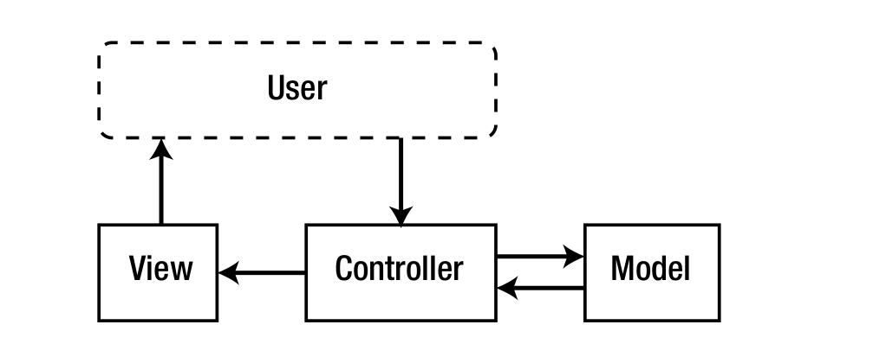
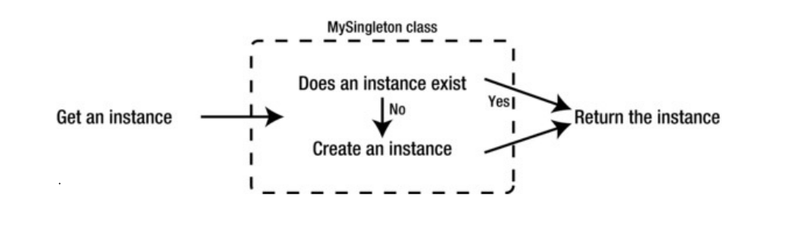
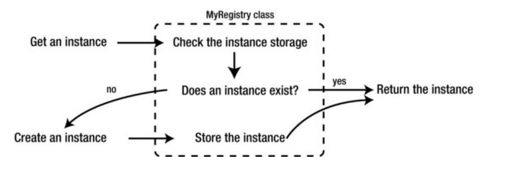
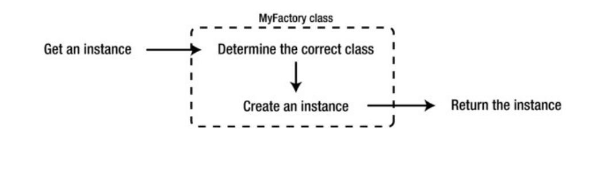
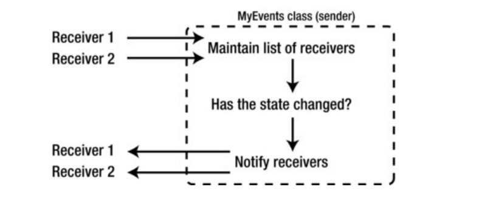

Este libro está dirigido tanto a desarrolladores nuevos como antiguos. Está diseñado de tal manera que primero se explican los conceptos básicos y luego se cubren los temas avanzados. Esto significa que los desarrolladores más experimentados pueden encontrar ciertas secciones (como las que explican los patrones de diseño) como obsoletas. Si este es usted, siéntase en libertad de pasar a las cosas más desafiantes. Si es nuevo en la programación orientada a objetos, la construcción de marcos o PHP en general, le recomendaría leer todo y tomar descansos entre la lectura para recapitular lo que ha aprendido al codificar algo.
Este libro no te enseñará PHP. Se asume que tiene conocimientos básicos de PHP y que al menos se siente cómodo con la creación de sitios web PHP. Si es nuevo en PHP o nunca lo ha usado, le sugiero que eche un vistazo a Beginning PHP 5 y MySQL por W. Jason Gilmore (Apress, 2010) (www.apress.com/9781893115514), ya que le dará una excelente comprensión de PHP.
Este libro no le enseñará cómo ser un experto en CodeIgniter, Zend Framework o CakePHP. Si bien estos marcos se discuten y utilizan en el transcurso de este libro, el propósito de su uso es ilustrar las diferencias entre sus enfoques y el enfoque que tomamos al construir nuestro propio marco. En consecuencia, hay una variedad de formas en las que podrían usarse de manera más eficiente o en un estilo recomendado por sus respectivas comunidades y documentación. El propósito de su uso aquí es puramente ilustrativo.
Si tiene curiosidad por aprender a desarrollar mejor mediante la programación orientada a objetos, o mediante la creación de marcos, o mediante el diseño de API claras y coherentes, entonces disfrutará de este libro.
Si tiene curiosidad sobre lo que implica la creación de frameworks MVC populares (como los demostrados en los capítulos posteriores) o por qué han elegido ciertos caminos de desarrollo, entonces disfrutará de este libro. Si desea convertirse en un mejor programador, espero que encuentre este libro invaluable.
Cada línea de código de este libro se refleja en el código contenido en los archivos (que se puede descargar del sitio complementario). Si bien se ha realizado un gran esfuerzo para garantizar que el código sea sintácticamente sólido (y, por lo tanto, se ejecutará directamente en su editor de código), puede haber ocasiones en las que se omitan las dependencias para ayudar a acortar algunos de los listados de código más largos. Cuando este sea el caso, puede estar seguro de que el código omitido ya es el que se ha explicado y creado en capítulos anteriores o en páginas anteriores dentro del mismo capítulo. En caso de duda o si tiene problemas para ejecutar el código fuente, consulte los archivos de código fuente.
El desarrollo de software no es una idea nueva. Se dice que Ada Lovelace escribió el primer programa de computadora a mediados del siglo XIX para Analytical Engine, la primera computadora mecánica prototipada por Charles Babbage. Ha pasado mucho tiempo desde entonces, y el desarrollo de software se ha convertido en lo que posiblemente sea uno de los mayores contribuyentes al desarrollo de nuestra especie. Diseñar un buen software es difícil. Implica tener en cuenta todos los aspectos de la aplicación que necesita construir, y se complica aún más por la necesidad de ser lo suficientemente específico para sus requisitos actuales para hacer el trabajo, al mismo tiempo que es lo suficientemente genérico para abordar problemas futuros. Muchos desarrolladores experimentados han tenido estos problemas y, con el tiempo, han surgido patrones comunes que ayudan a resolverlos. Christopher Alexander, un arquitecto estructural, describió por primera vez los patrones de tal manera que se puedan aplicar al desarrollo de software. Dijo: “Cada patrón describe un problema que ocurre una y otra vez en nuestro entorno, y luego describe el núcleo de la solución a ese problema, de tal manera que puede usar esta solución un millón de veces, sin tener que hacerlo nunca. de la misma manera dos veces '. Podría haber estado hablando de casas o ciudades, pero sus palabras capturan la esencia de lo que pretendemos hacer al considerar cómo podemos construir un marco sólido, seguro y reutilizable para aplicaciones web.
MVC (Model-View-Controller) es un patrón de diseño de software construido alrededor de la interconexión de tres tipos de componentes principales, en un lenguaje de programación como PHP, a menudo con un fuerte enfoque en paradigmas de software de programación orientada a objetos (OOP). . Los tres tipos de componentes se denominan vagamente modelos, vistas y controladores. Hablemos de ellos individualmente y luego veamos cómo encajan. El modelo es donde se guarda toda la lógica comercial de una aplicación. La lógica empresarial puede ser cualquier cosa específica sobre cómo una aplicación almacena datos o utiliza servicios de terceros para cumplir con sus requisitos comerciales. Si la aplicación debe acceder a información en una base de datos, el código para hacerlo se mantendrá en el modelo. Si necesita, por ejemplo, obtener datos de existencias o tuitear sobre un nuevo producto, ese código también se mantendría en el modelo. La vista es donde se guardan todos los elementos de la interfaz de usuario de nuestra aplicación. Esto puede incluir nuestro marcado HTML, hojas de estilo CSS y archivos JavaScript. Todo lo que un usuario ve o con lo que interactúa se puede mantener en una vista y, a veces, lo que el usuario ve es en realidad una combinación de muchas vistas diferentes en la misma solicitud. El controlador es el componente que conecta modelos y vistas entre sí. Los controladores aíslan la lógica empresarial de un modelo de los elementos de la interfaz de usuario de una vista y manejan cómo responderá la aplicación a la interacción del usuario en la vista. Los controladores son el primer punto de entrada a este trío de componentes, porque la solicitud se pasa primero a un controlador, que luego creará una instancia de los modelos y vistas necesarios para cumplir con una solicitud a la aplicación. Ver la Figura 1-1
No tiene sentido explicar qué es MVC sin saber por qué debería usarlo. ¿Recuerda los patrones de Christopher Alexander que mencioné antes? MVC es uno de los muchos patrones que se explicarán en este libro, pero para comprender la utilidad de este patrón de diseño, debemos mirar hacia los problemas que ayuda a aliviar. Si piensa en un equipo deportivo, es posible que se dé cuenta de que se trata esencialmente de un gran grupo de jugadores que cumplen sus roles individuales para impulsar al equipo hacia adelante. Los buenos equipos deportivos requieren el esfuerzo de cada jugador para que desempeñe su papel lo mejor que pueda para impulsar al equipo en su conjunto. La Web es un campo de juego abierto. Permite a las empresas, tanto grandes como pequeñas, competir entre sí sin que el tamaño sea un factor en la calidad del trabajo. Esto significa que muchas empresas pequeñas con grupos de desarrolladores pequeños pueden tener la oportunidad de crear grandes aplicaciones web. También significa que muchas grandes empresas pueden tener muchas personas trabajando en grandes aplicaciones web al mismo tiempo. En toda esta multitarea y / o participación grupal, los aspectos de una aplicación (que deben estar separados) a menudo interfieren entre sí y requieren más tiempo y esfuerzo del estrictamente necesario para avanzar. Hay muchos aspectos en cualquier aplicación web complicada. Existe el diseño, que despierta el interés del usuario en el producto. Se requiere una lógica empresarial para hacer cosas prácticas, como procesar artículos de venta y facturar a los compradores. Luego está el proceso continuo de mejora, actualización, corrección de errores y racionalización general de la aplicación. En cualquier aplicación no estructurada, estas áreas tienden a fundirse juntas en un lío incoherente. Cuando la base de datos debe cambiarse para adaptarse a una nueva línea de productos, o la empresa decide cambiar la marca, no solo afecta el código que debería. Más desarrolladores deben involucrarse para asegurarse de que los cambios en una parte de la aplicación no rompan inmediatamente otras partes de la aplicación. Los cambios que solo deberían afectar a una pequeña sección del código terminan extendiéndose a todo tipo de áreas extrañas y problemáticas. Este es el problema que MVC busca abordar. Define contenedores estrictos para todo el código de una aplicación y caracteristicas. Cuando los cambios en el código de la base de datos están aislados en un modelo, las vistas y los controladores no se romperán. Cuando la ilustración de una aplicación cambia drásticamente, su controlador y modelo estarán a salvo de cambios importantes.
Ahora que sabemos más sobre por qué deberíamos usar MVC, veamos algunas alternativas populares a escribiendo nuestro propio marco.
Hay muchos frameworks PHP geniales disponibles, pero si limitamos nuestra vista a solo tres, creo que podemos tener una buena idea de lo que tienen en común y lo que hace que cada uno sea especial. Estos no son los mejores ni los únicos frameworks PHP MVC, sino simplemente una buena muestra de los diferentes enfoques para el desarrollo PHP MVC.
CodeIgniter es el primero y más simple de los marcos que analizaremos. Está desarrollado y mantenido por EllisLab y puede describirse como un marco de código abierto (aunque estrictamente controlado) que forma la base del CMS (Sistema de gestión de contenido) premium de EllisLab, ExpressionEngine. Ha existido durante siglos, sin embargo, sus ideales han cambiado muy poco en todos los años desde que lo usé por primera vez. Se esfuerza por mantener una huella pequeña, una excelente documentación para desarrolladores y una alta calidad de código. No disfruta de los mismos niveles de popularidad que algunos de los otros marcos de los que hablaremos, y esto se debe en parte a cómo EllisLab ha gestionado la comunidad CodeIgniter. Recientemente han comenzado a abordar este problema con nuevos conferencias y personal, y las cosas están mejorando para este marco. También ha inspirado otros frameworks, dando origen a proyectos como KohanaPHP.
Zend Framework es una colección extensa de bibliotecas de código poco acopladas que pueden formar la base de una arquitectura MVC. Zend Framework requiere bastante esfuerzo para comprender y dominar en relación con otros marcos MVC populares. Está desarrollado por Zend Technologies y disfruta de todos los beneficios de una comunidad grande y estable y de una amplia adopción. Mientras que los marcos como CodeIgniter se esfuerzan por ser livianos, favoreciendo solo lo esencial, Zend Framework incluye bibliotecas que ayudan a los desarrolladores a utilizar una amplia gama de servicios y API de terceros.
CakePHP es posiblemente el más popular de los tres marcos. A diferencia de los dos marcos anteriores, no se rige por ninguna entidad corporativa. Tiene una gran comunidad y es ampliamente adoptado. Favorece la convención sobre la configuración, lo que significa que muchos de los detalles más finos se asumen y automatizan. Esto es evidente en todas las áreas del marco, y a menudo se encontrará preguntándose cómo CakePHP está haciendo algo que no le pidió que lo hiciera, tanto para lo bueno como para lo malo. Esto significa que puede desarrollar una aplicación rápidamente, pero también que puede tener dificultades cuando lo necesite hacer cambios muy específicos. Esto incluso se ve en la herramienta de línea de comandos de generación de código: Bake. En cuestión de minutos, puede generar una aplicación de trabajo, simplemente siguiendo la línea de comandos mensajes y llenando los espacios en blanco con parámetros y comportamientos predeterminados.
Nos centraremos en el patrón de diseño MVC y, para lograrlo, necesitaremos utilizar otros patrones de diseño más simples para las bibliotecas en las que se construye el marco. Los patrones de diseño que revisaremos a menudo se pueden aplicar al desarrollo de procedimientos, pero los veremos en el contexto de la programación orientada a objetos. Esto significa que trataremos con clases (planos que contienen propiedades y funciones de ejecución) y cómo interactúan entre sí. Si usted es Si no está familiarizado con algunos de los conceptos que siguen, es posible que desee consultar un manual de idioma o un sitio de referencia.
Cuando creamos software de programación orientada a objetos, nos ocupamos de muchas clases. Si bien es ideal diseñar estas clases de tal manera que muchas instancias puedan estar activas simultáneamente, habrá ocasiones en las que prácticamente solo necesitemos una instancia de una clase, para un propósito o contexto específico. Singleton es un patrón de diseño que garantiza que una clase solo pueda tener una instancia a la vez. Una clase Singleton tradicional mantiene una instancia de sí misma en un propiedad estática, y no se puede crear una instancia (o clonar) de la forma habitual en que lo hace una clase que no es Singleton. Los singleton tienen un método de acceso de instancia especial, que devuelve la propiedad de instancia interna o crea una nueva instancia para devolver y almacenar. Vea la Figura 1-2.

// Clase general singleton
class Singleton {
// Mantenga la instancia de la clase.
private static $instance = null;
// El constructor es privado para evitar la iniciación con código externo.
private function __construct()
{
// El proceso costoso (por ejemplo, conexión db) va aquí.
}
// El objeto se crea desde dentro de la propia clase solo si la clase no tiene instancia.
public static function getInstance()
{
if (self::$instance == null)
{
self::$instance = new Singleton();
}
return self::$instance;
}
}
// Todas las variables apuntan al mismo objeto.
$object1 = Singleton::getInstance();
$object2 = Singleton::getInstance();
$object3 = Singleton::getInstance();
Un registro es una clase que puede almacenar y devolver instancias de clases estándar. Piense en ello como un director de equipo que saca a los jugadores del campo de juego y envía a otros nuevos según sea necesario. Usamos clases de Registro para administrar una cantidad finita de instancias de clases, por lo que no necesitamos seguir restableciendo clases de las que el Registro ya contiene instancias. Otra forma de pensar en una clase de registro es que nos ayuda a tratar las clases como Singletons, sin tener que hacer esas clases normales Singletons. Podríamos encontrarnos en una situación en la que necesitemos dos instancias de una clase. Quizás necesitemos conectarnos a dos bases de datos separadas, pero no queremos seguir conectándonos a ellas, por lo que usamos un Registro. Vea la Figura 1-3.

//
// La clase de almacenamiento genérico ayuda a administrar datos globales.
// Aquí el error es 'global'. Ningún dato debería ser realmente global:
// como máximo en toda la solicitud.
//
// @category Zend
// @package Zend_Registry
// @copyright Copyright (c) 2005-2010 Zend Technologies USA Inc. (http://www.zend.com)
// @license http://framework.zend.com/license/new-bsd New BSD License
//
class Zend_Registry extends ArrayObject
{
//
//Nombre de clase del objeto de registro singleton.
//@var cadena "string"
//
private static $_registryClassName = 'Zend_Registry';
//
// El objeto de registro proporciona almacenamiento para objetos compartidos.
// @var Zend_Registry
//
private static $_registry = null;
/**
* Retrieves the default registry instance.
* A Singleton is a recipe for hiding dependencies to a class.
*
* @return Zend_Registry
*/
public static function getInstance()
{
if (self::$_registry === null) {
self::init();
}
return self::$_registry;
}
/**
* Initialize the default registry instance.
*
* @return void
*/
protected static function init()
{
self::setInstance(new self::$_registryClassName());
}
/**
* getter method, basically same as offsetGet().
*
* This method can be called from an object of type Zend_Registry, or it
* can be called statically. In the latter case, it uses the default
* static instance stored in the class.
*
* @param string $index - get the value associated with $index
* @return mixed
* @throws Zend_Exception if no entry is registerd for $index.
*/
public static function get($index)
{
$instance = self::getInstance();
if (!$instance->offsetExists($index)) {
require_once 'Zend/Exception.php';
throw new Zend_Exception("No entry is registered for key '$index'");
}
return $instance->offsetGet($index);
}
/**
* setter method, basically same as offsetSet().
*
* This method can be called from an object of type Zend_Registry, or it
* can be called statically. In the latter case, it uses the default
* static instance stored in the class.
*
* @param string $index The location in the ArrayObject in which to store
* the value.
* @param mixed $value The object to store in the ArrayObject.
* @return void
*/
public static function set($index, $value)
{
$instance = self::getInstance();
$instance->offsetSet($index, $value);
}
/**
* Returns TRUE if the $index is a named value in the registry,
* or FALSE if $index was not found in the registry.
*
* @param string $index
* @return boolean
*/
public static function isRegistered($index)
{
if (self::$_registry === null) {
return false;
}
return self::$_registry->offsetExists($index);
}
/**
* Constructs a parent ArrayObject with default
* ARRAY_AS_PROPS to allow acces as an object
*
* @param array $array data array
* @param integer $flags ArrayObject flags
*/
public function __construct($array = array(), $flags = parent::ARRAY_AS_PROPS)
{
parent::__construct($array, $flags);
}
}
Una fábrica es una clase que proporciona una interfaz singular para crear cualquier número de instancias, sin necesidad de especificar el tipo de clase que deben ser las instancias. Una fábrica elegirá qué clase instanciar en función de la entrada o lógica interna. Las fábricas son útiles cuando necesitamos realizar trabajos de bases de datos, pero podrían tener que lidiar con cualquier cantidad de controladores de bases de datos diferentes. Usamos una clase de fábrica para darnos la clase de controlador correcta, asegurando que todos nuestros controladores se ajusten a un interfaz estándar. Vea la Figura 1-4.
El patrón Observer describe una estructura en la que hay emisores y receptores. Cuando algo cambia en el estado de un remitente, envía un mensaje a los receptores asociados con él, generalmente llamando a una de sus funciones. Los usos más prácticos de este patrón son implementar software basado en eventos (asincrónico) y facilitar el acoplamiento flexible en clases solo relacionadas con cambios en el estado de la aplicación. Vea la Figura 1-5.
Quizás se pregunte por qué necesitaríamos crear nuestro propio marco, cuando ya existen tantas buenas opciones. La razón por la que aprenderemos a crear nuestro propio marco es para que podamos comprender los principios subyacentes de MVC.
A medida que aprendamos más sobre estos principios, creceremos en nuestra comprensión de por qué los excelentes marcos MVC actualmente disponibles hacen las cosas de la manera en que lo hacen. No estamos aprendiendo a crear una aplicación en Zend Framework o en CakePHP. Estamos aprendiendo cómo funciona MVC y, por extensión, cómo estos marcos se han basado (o se han desviado) de la forma en que esperaríamos que se construyera un marco MVC.
Nuestro objetivo no es agregar a la lista de marcos disponibles para uso en producción. Nuestro objetivo es aprender cómo y por qué estos marcos hacen lo que hacen, para que podamos tomar decisiones informadas cuando se trata de seleccionar un marco para nuestro próximo gran proyecto.
Ya he mencionado nuestro primer gol, que es aprender. Por encima de todo, nuestro marco debe enseñarnos los conceptos centrales de que ningún marco de MVC puede hacer sin. Lo haremos primero mirando algunos componentes básicos, y más tarde crearemos una aplicación real sobre estos componentes. Lo importante es que los conceptos básicos de nuestro marco deben permanecer iguales sin importar qué aplicaciones que construimos con ella. Esto naturalmente inspirará el segundo objetivo, que es crear un marco que sea fácil de configurar, y hace que las más mínimas suposiciones sean posibles sobre las aplicaciones que construiremos con él. Esto se verá en la configuración de la aplicación más adelante, así como la Código de sistema subyacente. Deberíamos intentarlo solo Habilita las opciones de configuración donde tienen sentido. Nuestro último objetivo es crear una plataforma abstracta, lo suficientemente capaz de ejecutar en muchos entornos diferentes, pero se centró solo en los que podemos esperar en nuestro entorno de prueba. Para expresarlo de manera diferente, quiero que permitamos cualquier color, pero comience a pintarlo azul. Esto significa que debemos crear la infraestructura para poder interactuar con muchos tipos diferentes de bases de datos, pero para comenzar, escribiremos solo un controlador de base de datos. Significa que deberíamos crear la infraestructura para poder almacenar caché en una variedad de lugares, pero solo se preocupa por el primer tipo con el que trataremos. Quiero conseguirnos en la mentalidad de tratar con la raíz del problema, y todas las formas en que podemos resolverlo. Quiero que aprendamos a que se vea un verdadero marco MVC. Quiero que nos esforzemos por formas en que podemos permitir la flexibilidad cuando tenga más sentido, y la previsibilidad cuando tiene más sentido. Quiero que nos preocupe todo esto, mientras se ocupa de la mayor cantidad de casos concretos posible. Cuando tenemos un buen manejo de todo, podemos comenzar a suceder en múltiples entornos y servicios, pero hasta entonces, tenemos nuestros tres objetivos.